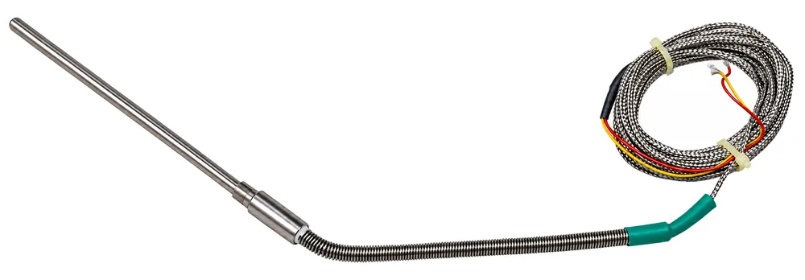
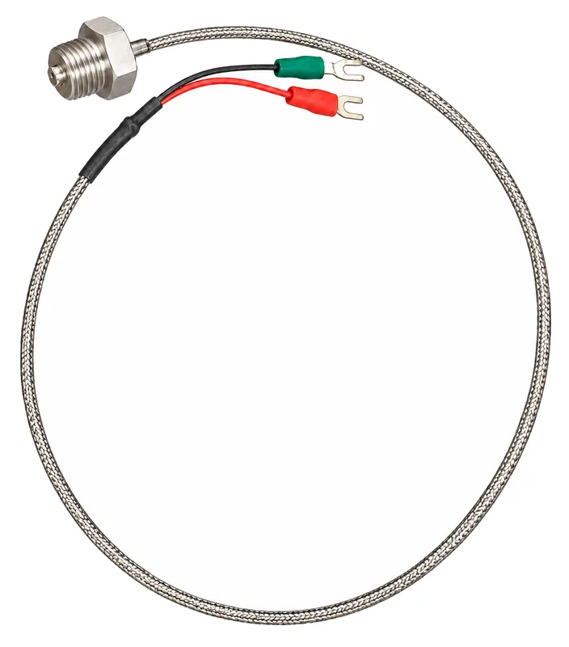
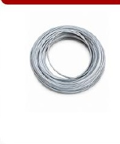
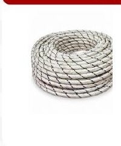
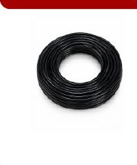
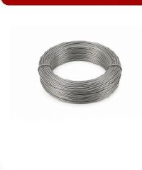
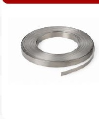

Configuración
Sonda angular
Cambio de dirección para orientar la salida del cable según el montaje.
Sensores, termocuplas, cables de alta temperatura y materiales resistivos seleccionados conforme a la aplicación.
Familia 01 · Medición
Configuraciones para equipos, tuberías, cámaras y superficies; el tipo de sensor y el montaje se definen según el punto de medición.

Cambio de dirección para orientar la salida del cable según el montaje.

Fijación mediante rosca, cubierta metálica y terminales para conexión.
Conjunto con resorte y sistema de sujeción para ajustar el punto de contacto.
Fijación superficial para medición de temperatura por contacto.
Familia 02 · Cableado
Opciones para cableado interno, conexiones industriales y transmisión de señal o datos en equipos expuestos a temperatura elevada.

Construcción 01

Construcción 02

Construcción 03
Las características no indicadas —incluyendo temperatura máxima, tensión, aislamiento exacto y certificaciones— deben confirmarse antes de cotizar.
Familia 03 · Material resistivo
Elementos metálicos redondos y planos para fabricación o mantenimiento de resistencias eléctricas, selladoras y equipos de termoformado.

Presentación redonda

Presentación plana
Envíenos fotografía, ficha, plano o muestra cuando esté disponible.